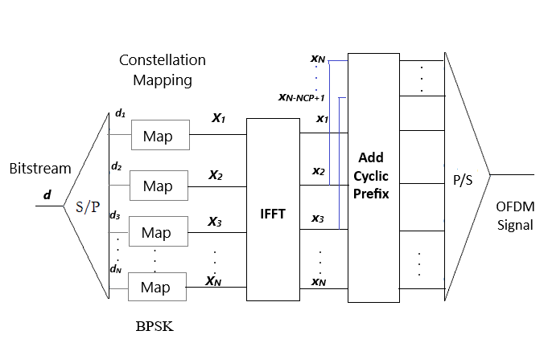
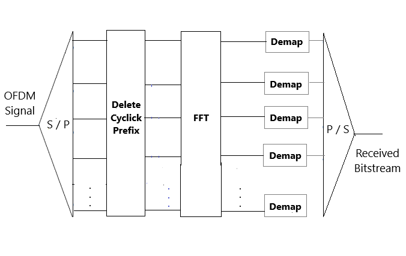

Calculation of BER vs. SNR for OFDM Modulation with BPSK
Number of OFDM Symbols:
Number of OFDM Subcarriers (N):
Length of Cyclic Prefix (Ncp):
Sampling Frequency (Fs):
Show results for OFDM Symbol:
SNR (dB):
 
Calculate BER
Reset Simulator
Generate Subcarrier
Time domain ofdm without cp
Time domain ofdm cp
Received subcarrier
Demodulate OFDM
SNR (in dB)
Bit Error Rate (BER)
Plot BER vs SNR
Bitstream:
Input Bitstream
Recovered Bitstream